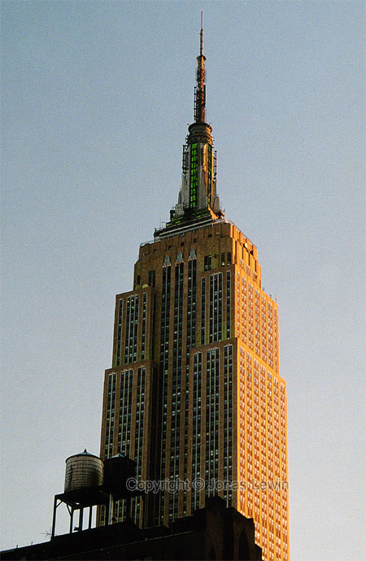

When
we where starting in Philly the weather was almost not acceptable to be
driving in. And we discovered that most of the locals thought the same way,
since we where almost alone on the roads. Some trucks and some cars where
just as convinced as we that they just had go from A to B, regardless of the
snow.
When
arriving at the Staten Island Ferries the weather where just about to clear.
We never could imagine that almost all clouds would disappear from the sky
that day.
You can see on the picture on the right that the clouds still are present,
but some buildings are casting their shadow on other buildings. Most visible
is the shadow on the left tower in World Trade Center.
As
always, the Staten Island Ferries are a nice way to get close enough to the
Statue of Liberty. She doesn't look that big on this photo, but she seems a
lot taller when you're standing there. We chose to not come any closer to
her, as the ferry allows us to get close enough for our purpose.
It's
as famous at the Statue of Liberty. The New Your Stock Exchange. Always
heavily guarded to make sure you don't get too close. I just can't figure
out why it's that guarded. I'd rather walk an hour in Central Park than an
hour inside this building on Wall Street. Anyway, we continued our walk up
Manhattan. We had much left to see this day.
Modern
art is a great place to lean the shovel against.
Quite
close to Wall street you will find this very small church called Trinity
Church. Perhaps it would not be considered as a small church if it would be
placed in any other place than just next to a few skyscrapers. But as we are
walking in Manhattan, this seems really tiny. It always has a very old and
cold look, regardless of the time of year. As this was winter when we saw it
this time, it seemed ice cold. I'd rather not go in there. I was freezing
enough.
City
Hall Park. Looks closed. Nevertheless we thought it looked nice to have a
small park in this city that never sleeps.
I guess you are wondering (we where) where all the people is, as this city
never sleeps, but it is probably because of the weather condition we had
when we started this day.
The snow and the cold kept the street-performers away. That's unfortunate.
After
walking a few minutes, we came across Little Italy and Chinatown. The name
of those parts speaks for them selves.
Prices in Chinatown where normally less than in the rest of Manhattan, and
many shops are similarly arranged to the ones in China. Of course they where
quite influenced by the US, as was to be expected.
Quality of the houses where not at all as good as the rest of Manhattan.
Have
you ever seen streets as straight as these any where else? This makes
driving and navigating in Manhattan really easy. They are also very friendly
in traffic here. This is far from paradise traffic wise, but compared to
most towns in southern Sweden, this is really easy driving.
Signal that you want to change lane, and very soon they will let you in.
After
some hours of hard walking we had to find something to eat. And what is more
"Manhattan-ish" than their pizza slices? So we indulged in our meal, and
ordered 3 slices. That was way too much as they were far bigger than the
ones we where used to. And way thicker. But we needed it.
(What is that strange soft drink we are having?)
Ever
seen this building in any picture before? I heard that this is New York's
first (and therefore oldest) skyscraper. It really has it's own unique form.
I've never seen it copied anywhere, which makes it even more fascinating.
I'm
not King Kong, but I will go to the top of Empire State Building. I have to
pay for it though. That's what Kong Kong messed up. He was killed, and I'm
still around.
The weather kept the street-performers away, but in return gave us less time
standing in queue, waiting for a ticket for the elevator Empire State.
It
looks like that the southern tip of Manhattan is just a fasad.
Some
frozen guys took the elevator up on the Empire State Building. As the sun
was shining as good as it possibly could we where looking down on Manhattan.
After a while we realized that there was a mirror behind us, so we just
turned around and I got this photo of us with southern Manhattan behind us
as a background.
On
the other side we saw this really cool view. A photo worth trying to shoot.
It worked out well. All other skyscrapers looks tiny compared to this one.
Empire state would look tiny compared to the Twin Tower in Kuala Lumpur.
That's (for me) unimaginable high. That leaves the question what the point
is of having such a tall building. I'd prefer not to answer that question.
Rockefeller
Center is not a small building either.
For a while, it seems that Manhattan is all about just building as tall
building as anyone can ever produce here. But for a "country boy" like me,
this is impressive.
 This
time around I was not as lucky as to see a newly wed couple coming out the
doors of St Patrick's Cathedral. The elaboration of the decoration on these
walls are a very nice break from the boring walls of Rockefeller Center.
It's also a lot larger than the Trinity Church we saw in south Manhattan.
This
time around I was not as lucky as to see a newly wed couple coming out the
doors of St Patrick's Cathedral. The elaboration of the decoration on these
walls are a very nice break from the boring walls of Rockefeller Center.
It's also a lot larger than the Trinity Church we saw in south Manhattan.
Plaza
hotel has it's own unique design.
This
looks nothing like the Central Park I've seen in so many movies. Could be
that it's always summer in those movies.
After Central Park it's time to start heading back for those places we've
missed.
Here
we see the Rockefeller Center in a little bit more familiar view. This image
also helps in understanding a bit how tall these buildings actually are.
Madison
Square Garden. Rumor has it that it's a great arena for watching sports.
All
of my prejudices about the fat Americans came true in this single picture.
This
is where the action is. Times Square. Finally Manhattan is full of life as
it should be. (Manhattan has been full of life for a few hours before we got
here, but it didn't show in any of my previous pictures)
This is where all tourists should go, and we are tourists, so here we are.
For a while now, nobody has cared about weather the light was green or not.
Everybody walks when there's no car. Luckily all cars seem to accept the red
light.
I've
showed the clean sides of Manhattan in this page, but there's of course the
bad side as well.
The underground sewer, rats in waste baskets and those things that comes
with New York.
NASDAQ
gives me the impression that it's a lot more modern than the "Wall Street"
stock exchange. One example of being more modern is this giant screen with
commercial the whole time.
When
the night starts to get a grip on Manhattan, many things change here. Many
of them are hard/impossible to capture on film. It would help in some
occasions to have a tripod, but not for all of them.